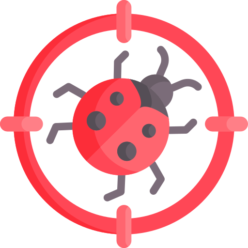

Responsividade
Sobre esta Seção
Atividades do Dia a Dia:
- Testar layout em diferentes tamanhos de viewport
- Validar breakpoints responsivos (mobile, tablet, desktop)
- Verificar adaptação de elementos em telas pequenas
- Testar menu hambúrguer e navegação mobile
- Validar imagens responsivas e adaptação de conteúdo
- Testar grid e flexbox em diferentes resoluções
- Validar legibilidade e usabilidade em mobile
Como Utilizar:
- Redimensione a janela do navegador para testar diferentes tamanhos
- Use as ferramentas de desenvolvedor para simular dispositivos
- Observe como os elementos se adaptam em diferentes breakpoints
- Teste a navegação e menus em telas pequenas
- Valide que o conteúdo permanece legível e funcional
- Use os
data-testidpara criar testes automatizados
Layout Responsivo
Redimensione a janela para ver a adaptação do layout.
Card 1
Este card se adapta ao tamanho da tela usando CSS Grid.
Card 2
Em telas pequenas, os cards ficam empilhados verticalmente.
Card 3
Em telas grandes, os cards ficam lado a lado.
Menu Responsivo
Menu que se adapta ao tamanho da tela.
Imagem Responsiva
Imagem que se adapta ao tamanho do container.

Auditor de alvos de toque
Mede todos os botões, links e campos visíveis e compara com o WCAG 2.2 (24 px, critério 2.5.8) e com as diretrizes de Apple e Google (44 a 48 px). Rode em larguras diferentes: um botão que passa no desktop pode encolher no celular.
- Alvos medidos
- —
- Abaixo de 24 px
- —
- 24 a 43 px
- —
- 44 px ou mais
- —
- Links em texto
- —
Menores alvos encontrados
Guia do especialista
Responsividade não é "caber na tela do iPhone". É o conteúdo continuar legível e operável em qualquer largura, com zoom e com texto maior. Estes critérios têm número no WCAG e viram casos de teste objetivos.
Breakpoints pelo conteúdo
- Não existe "largura do celular": aparelhos vão de 320 px a mais de 430 px, e tablets passam de 1024 px.
- Teste nas bordas de cada breakpoint (767 e 768, 1023 e 1024), não só no meio.
- Componentes que mudam pelo espaço do contêiner usam container queries; teste-os em colunas estreitas também.
Critérios do WCAG
- 1.4.10 Reflow: em 320 px de largura, nada de rolagem horizontal (exceto tabelas, mapas e código).
- 1.4.4 Redimensionar texto: com zoom de 200%, tudo continua legível e funcional.
- 1.4.12 Espaçamento de texto: aumentar entrelinha e espaços não pode cortar texto.
- 2.5.8 Tamanho do alvo: veja o auditor acima.
Imagens e mídia
max-width: 100%evita estouro, mas não economiza dados: usesrcsetesizes.- Reserve espaço com
width/heightouaspect-ratiopara não causar CLS. - Verifique a aba Network em uma largura de celular: o navegador baixou a versão pequena?
Armadilhas comuns
- Testar só redimensionando a janela do desktop: o celular tem toque, DPR alto e barras do navegador.
- Conteúdo escondido no celular com
display: noneque o usuário precisa (por exemplo, o preço). - Tabelas largas espremidas até ficarem ilegíveis em vez de rolar no próprio bloco.
- Esquecer o modo paisagem do celular, que costuma cair no breakpoint de tablet.
Automatize
Percorre as larguras críticas, verifica rolagem horizontal (WCAG 1.4.10) e guarda uma captura de tela para comparação visual.
import { test, expect } from '@playwright/test';
const larguras = [320, 375, 767, 768, 1023, 1024, 1440];
for (const largura of larguras) {
test(`sem rolagem horizontal em ${largura} px`, async ({ page }) => {
await page.setViewportSize({ width: largura, height: 800 });
await page.goto('/pages/mobile/responsividade.html');
const sobra = await page.evaluate(
() => document.documentElement.scrollWidth - document.documentElement.clientWidth
);
expect(sobra).toBe(0);
// regressão visual: a primeira execução cria a imagem de referência
await expect(page).toHaveScreenshot(`responsividade-${largura}.png`, { fullPage: true });
});
}
test('breakpoint muda exatamente em 768 px', async ({ page }) => {
await page.setViewportSize({ width: 767, height: 800 });
await page.goto('/pages/mobile/responsividade.html');
await expect(page.getByTestId('breakpoint')).toContainText('Mobile');
await page.setViewportSize({ width: 768, height: 800 });
await expect(page.getByTestId('breakpoint')).toContainText('Tablet');
});O mesmo critério do auditor, como teste automatizado.
import { test, expect, devices } from '@playwright/test';
test.use({ ...devices['iPhone 13'] });
test('nenhum botão menor que 24 x 24 px (WCAG 2.5.8)', async ({ page }) => {
await page.goto('/pages/mobile/responsividade.html');
const pequenos = await page.$$eval('main button, main [role=button]', (els) =>
els
.map((el) => ({ el, r: el.getBoundingClientRect() }))
.filter(({ r }) => r.width > 0 && (r.width < 24 || r.height < 24))
.map(({ el, r }) => `${el.textContent?.trim()} (${Math.round(r.width)}x${Math.round(r.height)})`)
);
// os exemplos de 16 px do auditor são propositais
expect(pequenos.filter((p) => !p.startsWith('16'))).toEqual([]);
});Informações para Testes
Cenários de Teste:
- Testar layout em viewport mobile (320px - 768px)
- Testar layout em viewport tablet (768px - 1024px)
- Testar layout em viewport desktop (1024px+)
- Validar que elementos não quebram em telas pequenas
- Testar menu hambúrguer em mobile
- Validar imagens responsivas
- Testar grid e flexbox em diferentes resoluções
Elementos identificáveis:
data-testid="viewport-info"- Informações do viewportdata-testid="viewport-size"- Tamanho atual do viewportdata-testid="breakpoint"- Breakpoint ativodata-testid="responsive-grid"- Grid responsivodata-testid="mobile-menu"- Menu responsivodata-testid="menu-toggle"- Botão toggle do menudata-testid="responsive-image"- Imagem responsiva
Exemplos de Teste Automatizado:
# Appium + Ruby - Testar responsividade
# Configurar capabilities para mobile web
caps = {
platformName: 'iOS',
deviceName: 'iPhone SE',
browserName: 'Safari',
automationName: 'XCUITest'
}
driver = Appium::Driver.new({ caps: caps }).start_driver
# Testar viewport mobile
driver.get('http://localhost:8080/pages/mobile/responsividade.html')
breakpoint = driver.find_element(:css, '[data-testid="breakpoint"]')
expect(breakpoint.text).to include('Mobile')
menu_toggle = driver.find_element(:css, '[data-testid="menu-toggle"]')
expect(menu_toggle.displayed?).to be true
# Testar em tablet
driver.manage.window.resize_to(1024, 768)
expect(breakpoint.text).to include('Tablet')
// Appium + Java - Testar responsividade
DesiredCapabilities caps = new DesiredCapabilities();
caps.setCapability("platformName", "iOS");
caps.setCapability("deviceName", "iPhone SE");
caps.setCapability("browserName", "Safari");
caps.setCapability("automationName", "XCUITest");
AppiumDriver driver = new IOSDriver(new URL("http://localhost:4723/wd/hub"), caps);
// Testar viewport mobile
driver.get("http://localhost:8080/pages/mobile/responsividade.html");
WebElement breakpoint = driver.findElement(By.cssSelector("[data-testid='breakpoint']"));
assert breakpoint.getText().contains("Mobile");
WebElement menuToggle = driver.findElement(By.cssSelector("[data-testid='menu-toggle']"));
assert menuToggle.isDisplayed();
// Testar em tablet
driver.manage().window().setSize(new Dimension(1024, 768));
assert breakpoint.getText().contains("Tablet");
*** Settings ***
Library AppiumLibrary
*** Test Cases ***
Testar Responsividade Mobile
Open Application http://localhost:4723/wd/hub
... platformName=iOS
... deviceName=iPhone SE
... browserName=Safari
... automationName=XCUITest
Go To Url http://localhost:8080/pages/mobile/responsividade.html
Element Should Contain css:[data-testid="breakpoint"] Mobile
Element Should Be Visible css:[data-testid="menu-toggle"]
Set Window Size 1024 768
Element Should Contain css:[data-testid="breakpoint"] Tablet